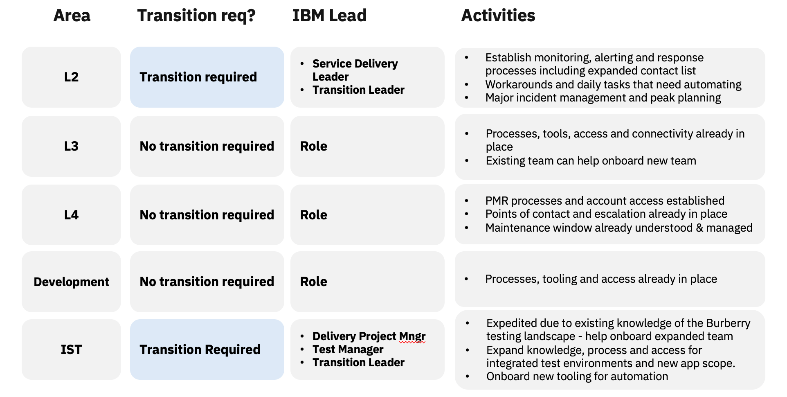
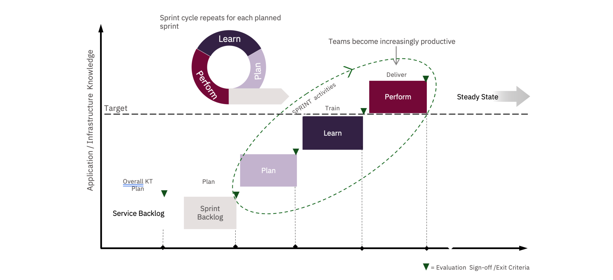

TRANSITION PLAN AND RESOURCES
As we are already working with you in the existing OMS scope, transition is limited to the new scope
areas in L2 and Test only. We know your team, ways of working and bring an extended plan to minimise
transition required across the estate.

OUR KNOWLEDGE TRANSFER METHOD
Throughout each KT wave, we’re progressively building our knowledge through sprints. We follow our three-stage agile KT approach; plan, learn, and perform. We grow our knowledge and experience by taking responsibility for resolving increasingly more complex tasks under the supervision of the incumbent suppliers. We begin by resolving low-priority tickets and routine tasks and gradually move towards higher-priority incidents and periodic activities. By the time KT is complete, we’ll have garnered hands-on experience in resolving tasks of all complexities.
At the end of each sprint, we review the knowledge we've acquired. During the final sprint, the former suppliers must approve our knowledge and capabilities to ensure they meet your business SMEs' satisfaction. Without this sign-off, we cannot take on the responsibility of cutover.
At the end of each sprint, we review the knowledge we've acquired. During the final sprint, the former suppliers must approve our knowledge and capabilities to ensure they meet your business SMEs' satisfaction. Without this sign-off, we cannot take on the responsibility of cutover.

IBM INVESTED AI & GUARDRAILS